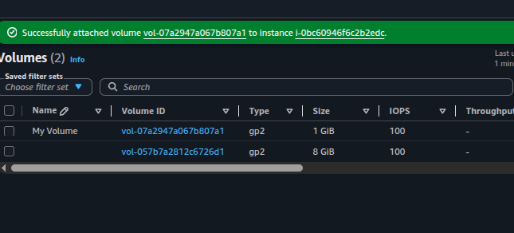
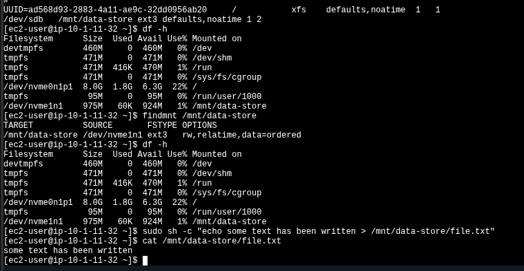
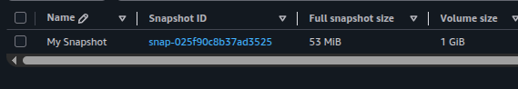
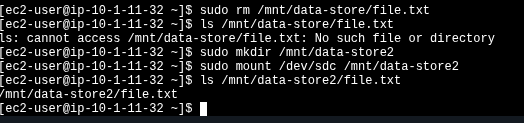

Volume lifecycle
Create → attach → format → mount → persist. Volumes are AZ-bound and exposed to Linux as block
devices. On Nitro instances /dev/sdb appears as /dev/nvme1n1.
Create an EBS volume, attach it to an EC2 instance, format it with ext3, persist the mount through
/etc/fstab, take a snapshot to S3, and restore the snapshot into a new volume to recover
deleted data.
Provisioned a gp2 1 GiB volume in the same Availability Zone as the
Lab instance, attached it as /dev/sdb, formatted with
ext3 and mounted under /mnt/data-store. Persisted the mount via
/etc/fstab, wrote a test file, snapshotted the volume, deleted the file, and proved
recovery by creating a new volume from the snapshot and mounting it at /mnt/data-store2.
Create → attach → format → mount → persist. Volumes are AZ-bound and exposed to Linux as block
devices. On Nitro instances /dev/sdb appears as /dev/nvme1n1.
Snapshot → delete data → restore. Snapshots live in S3, are incremental, and can be used to clone a volume in any AZ of the same Region.
All resources sit in the same Region and the volume is co-located with the instance because EBS volumes are bound to a single Availability Zone.
| Component | Configuration | Purpose |
|---|---|---|
| Lab EC2 instance | Pre-provisioned, Amazon Linux, Nitro-based. AZ us-west-2a. |
Host where volumes are attached and mounted. |
| Root volume | gp2, 8 GiB, attached as /dev/nvme0n1p1. |
Pre-existing OS disk — not modified. |
| My Volume | gp2, 1 GiB, same AZ as Lab. Attached as /dev/sdb. |
Working volume created in this lab. Formatted with ext3. |
| My Snapshot | Point-in-time copy of My Volume. 53 MiB stored. | Backup. Persists in S3 independently of the source volume. |
| Restored Volume | gp2, 1 GiB, created from My Snapshot. Attached as /dev/sdc. |
Recovery target. Contains the data that existed at snapshot time. |
Five technical tasks: provision the volume, attach it, mount it, snapshot it, and restore. The console clicks are summarized; the CLI work is documented in full.
Name=My Volume for identification next to the existing 8 GiB
root volume./dev/sdb. State moved to In-use.
My Volume (gp2, 1 GiB) attached to the Lab instance.
The 8 GiB root volume is visible alongside.df -h before doing anything: only the root volume
/dev/nvme0n1p1 shows up. The new volume is attached at the EC2 layer but Linux
has not been told what to do with it yet.# Before formatting / mounting, the new volume is invisible to df
$ df -h
Filesystem Size Used Avail Use% Mounted on
devtmpfs 464M 0 464M 0% /dev
tmpfs 473M 0 473M 0% /dev/shm
/dev/nvme0n1p1 8.0G 1.7G 6.4G 21% //dev/sdb, but
inside the OS the kernel exposes it as /dev/nvme1n1. The sdX names
still work as aliases, but df and findmnt will report
nvmeXn1.
ext3 filesystem on the raw block device, then a mount point under
/mnt/data-store and mounted it./etc/fstab so the mount survives reboots — without this,
the volume would have to be remounted manually on every boot.# 1. Format the raw block device
sudo mkfs -t ext3 /dev/sdb
# 2. Mount point + mount
sudo mkdir /mnt/data-store
sudo mount /dev/sdb /mnt/data-store
# 3. Persist across reboots
echo "/dev/sdb /mnt/data-store ext3 defaults,noatime 1 2" | sudo tee -a /etc/fstab
# 4. Verify
cat /etc/fstab
df -h
findmnt /mnt/data-store
# 5. Write & read a test file
sudo sh -c "echo some text has been written > /mnt/data-store/file.txt"
cat /mnt/data-store/file.txt
/etc/fstab entry, df -h showing
/dev/nvme1n1 mounted on /mnt/data-store, findmnt
confirming ext3, and the write/read cycle returning "some text has been
written". Scroll the panel — the terminal output is dense on purpose.My Volume → Actions ·
Create snapshot, tagged Name=My Snapshot.
My Snapshot at 53 MiB stored for
a 1 GiB source volume — only used blocks are persisted.file.txt on the original mount and confirmed it was gone with
ls.Name=Restored Volume. Attached the new volume as
/dev/sdc./mnt/data-store2, mounted the restored volume there, and the deleted
file reappeared exactly as it was at snapshot time.# Wipe the file on the original volume
sudo rm /mnt/data-store/file.txt
ls /mnt/data-store/file.txt
# → ls: cannot access /mnt/data-store/file.txt: No such file or directory
# Mount the restored volume (attached as /dev/sdc → /dev/nvme2n1 on Nitro)
sudo mkdir /mnt/data-store2
sudo mount /dev/sdc /mnt/data-store2
# The file is back — exactly as it existed at snapshot time
ls /mnt/data-store2/file.txt
# → /mnt/data-store2/file.txt
/mnt/data-store2, and the file recovered intact.mkfs needed, just
mount.
Quick lookup for the storage commands used in this lab.
| Command | Purpose | Notes |
|---|---|---|
df -h |
List mounted filesystems with human-readable sizes. | Does not show attached-but-unmounted volumes. |
mkfs -t ext3 /dev/sdb |
Create an ext3 filesystem on a raw block device. | Destructive — wipes whatever was on the device. |
mount /dev/sdb /mnt/data-store |
Attach the filesystem to a directory in the tree. | Non-persistent. Lost on reboot unless declared in /etc/fstab. |
findmnt <path> |
Show source device, fs type, and mount options for a path. | Better than parsing mount output. |
/etc/fstab entry |
Declare a mount so it persists across reboots. | Fields: device mountpoint fstype options dump pass. |
cat / echo > /mnt/... |
Write and read a file to validate the filesystem. | Use sudo sh -c "..." for the redirect — sudo echo > fails
because the shell, not echo, owns the redirect. |
mkfs + mount before the volume is usable./etc/fstab is the difference between "works now" and "works after reboot".
EBS gives you a block device. AWS handles durability and provisioning; the OS handles filesystem, mount, and persistence. The two layers don't overlap — losing track of which side is responsible for what is the most common source of confusion.
Snapshots are the cleanest backup primitive in this stack: incremental, region-durable, and
restorable into any AZ. Combined with /etc/fstab persistence, this is the
minimum-viable durable-storage pattern for any stateful workload on EC2.
The console says /dev/sdb. The OS on Nitro instances shows
/dev/nvme1n1. Both work — the sdX names are symlinks/aliases — but
monitoring tools and df will use the NVMe name.
Creating the volume in the wrong AZ silently breaks the lab — the instance never appears in the attach dropdown. Always confirm the AZ of the target instance before clicking Create.
A manual mount works until the next reboot. The fstab entry is what makes the
configuration survive. The 1 2 fields at the end control dump and
fsck ordering — not optional.
A 1 GiB volume produced a 53 MiB snapshot because EBS only stores used blocks. Useful for cost forecasting — billing is on snapshot storage, not nominal volume size.